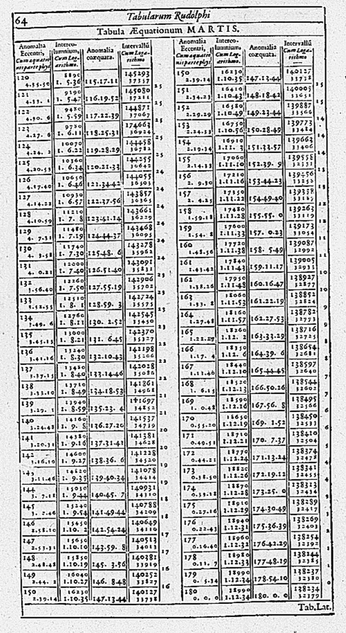

Tables everywhere
The first McDonald’s ledger, 1959

! The sales ledger from Lou Groen’s opening day of business, January 13, 1959, at his first McDonald’s in Monfort Heights, Ohio. Image courtesy of Paul Groen.
New York City Burial Record, 1830
! The Original Ledger of Burial Records, New York Marble Cemetery. Original source
Tycho Brahe’s Star Catalog, 1602

! By 1592, Tycho had produced a catalogue of 777 stars, the first new catalogue known to the Latin West since the time of Ptolemy. This catalogue was printed for inclusion in the Astronomiae instauratae progymnasmata.
Hockey Statistics, 2014

! NHL players of 2014
Ebola clinical records, 2015

! Tracking cases at the Liberian Ministry of Health and Social Welfare. Original source
What’s in common?
Tables
Terminologies
| City | Province | Population |
|---|---|---|
| Oshawa | Ontario | 140,000 |
| Toronto | Ontario | 2,600,000 |
| Montreal | Quebec | 1,600,000 |
| Clarington | Ontario | 84,000 |
| Paris | Ontario | 11,000 |
| Brooklin | Ontario | NULL |
Some definitions:
- !
- Table (relation)
- Attributes (columns)
- Tuples (rows)
- Values (cell)
Table
| City | Province | Population |
|---|---|---|
| Oshawa | Ontario | 140,000 |
| Toronto | Ontario | 2,600,000 |
| Montreal | Quebec | 1,600,000 |
| Clarington | Ontario | 84,000 |
| Paris | Ontario | 11,000 |
| Brooklin | Ontario | NULL |
This is a table. It consists of
- three attributes
- six tuples
- 17 data values, and one missing value.
Attribute
An attribute is a column in a table. It consists
- a name
- a data type.
| City | Province | Population |
|---|---|---|
| … | … | … |
- There are three attributes.
- The first attribute is
City, and its data type isstring. - The last attribute is
Population, and its data type isinteger.
Tuple
A tuple is a row of data in a table.
| City | Province | Population |
|---|---|---|
| Paris | Ontario | 11,000 |
| Brooklin | Ontario | NULL |
Two tuples
_____________________________________
| City | Province | Population |
|---|---|---|
| Paris | Ontario | 11,000 |
| Brooklin | Ontario | NULL |
This tuple has three values.
! Can it have four values?
_____________________________________
| City | Province | Population |
|---|---|---|
| Paris | Ontario | 11,000 |
| Brooklin | Ontario | NULL |
This tuple has two values, as the value for the attribute population is missing.
Data Modeling
Data Modeling
Data in real-life scenarios:
For example:
- Student records
- Google map
- Network traffic
! Data Modeling
The data must be stored in a lossless form. Designing the layout and storage of data based on the real-life scenario is called data modeling.
Case study: a social graph as tables

Here is a simple social graph between four individuals.
How do we encode this as one or more tables?
___________________
| person | knows |
|---|---|
| Steve Jobs | Marissa Mayer |
| Steve Jobs | Bill Gates |
| Bill Gates | Marissa Mayer |
| Bill Gates | Bill Job |
It’s important to note that this is a lossless encoding of the social graph.
________________________

How do we model the additional information of the augmented social graph?
___________________________
Use more tables !
Table: Knows
| person | knows |
|---|---|
| Steve Jobs | Marissa Mayer |
| Steve Jobs | Bill Gates |
| Bill Gates | Marissa Mayer |
| Bill Gates | Bill Joy |
Table: Position
| person | position | company |
|---|---|---|
| Steve Jobs | CEO | Apple |
| Marissa Mayer | CEO | Yahoo |
| Bill Gates | Chairman | Microsoft |
| Bill Joy | Chief Scientist | SUN Microsystems |
___________________________
What if we use one table? !
Table: Knows-and-position
| person | position | company | knows |
|---|---|---|---|
| Steve Jobs | Marissa Mayer | ||
| Steve Jobs | Bill Gates | ||
| Bill Gates | Marissa Mayer | ||
| Bill Gates | Bill Joy | ||
| Marissa Mayer | CEO | Yahoo | |
| Bill Joy | Chief Scientist | SUN Microsystems |
Forcing everything to be stored as a single table causes some issues:
Data redundancy:
CEO andApple are storied multiple times just becauseSteve Jobsknows lots of people.NULL values are used forMarissa MayerandBill Joy.
_______________________________
Let’s summarize the data model:
- !
We will use two tables.
Table Knows will have two attributes:
- person: text
- knows: text
Table Position will have three attributes:
- person: text
- position: text
- company: text
Summary
Tables
Attributes
Tuples
Values (data and missing)
Data modeling